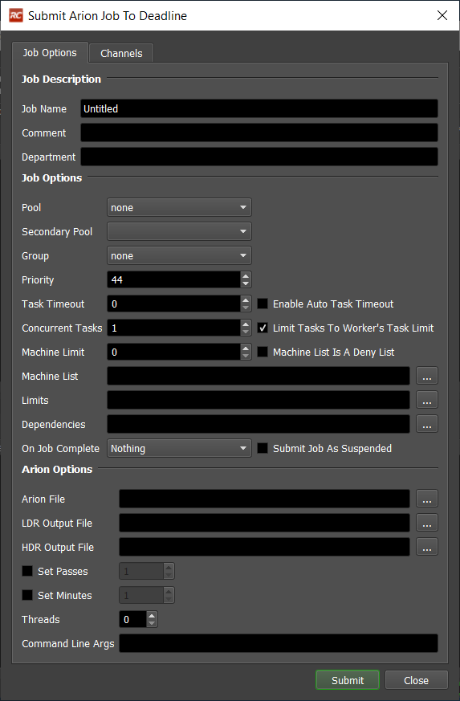
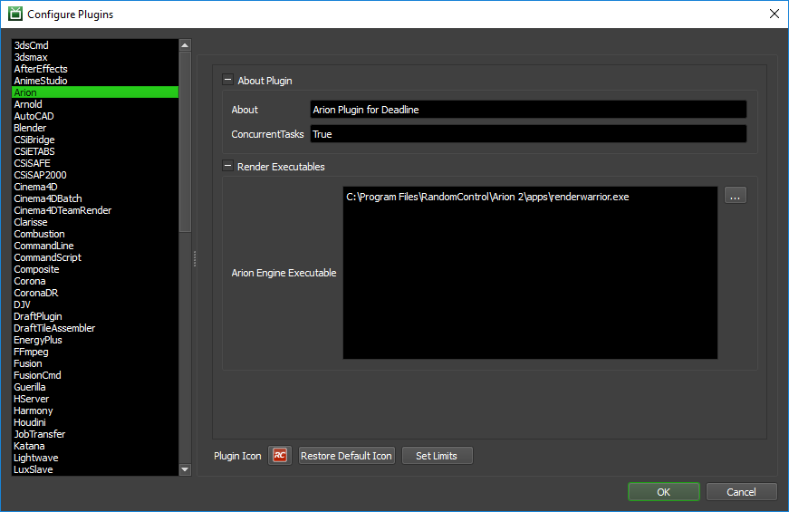

Arion Standalone¶
Job Submission¶
You can submit Arion jobs from the Monitor. Note that Arion’s RenderWarrior application does not support animations and therefore only single Arion files may be submitted. Arion animations can be rendered through the Arion live plugins.
Submission Options¶
The general Deadline options are explained in the Job Submission documentation, and the Integration options are explained in the Integration documentation. The Arion specific options are:
Arion File: The Arion scene that will be rendered. Can be a .rcs or .obj file.
LDR Output File: The name of the rendered LDR output file. If no output file is specified a default image file will be saved beside the Arion file.
HDR Output File: The name of the rendered HDR output file. If no output file is specified a default image file will be saved beside the Arion file.
Passes: If enabled, Arion will render until the specified number of passes have completed.
Minutes: If enabled, Arion will render until the specified number of minutes have passed.
Threads: The number of threads that Arion will use to render the input file. If no threads are specified, a default of one will be used.
Command Line Args: Here you can specify additional command line arguments. Arion accepts command line arguments in the format “-arg:value”.
Channels: Each channel enabled will generate a different image appended with the channel name.
If both Passes and Minutes are specified, Arion will finish rendering when the first limit is reached. If neither are enabled, Arion will render indefinitely and the job will have to be stopped manually.
Plugin Configuration¶
You can configure the Arion plugin settings from the Monitor. While in power user mode, select Tools -> Configure Plugins and select the Arion plugin from the list on the left.
Render Executables
Arion Engine Executable: The path to the Arion engine executable file used for rendering. Enter alternative paths on separate lines.
FAQ¶
Which versions of Arion are supported?
Only the Arion 2 Standalone is supported.
Are there any issues with referencing a file in the global input folder when one or more other files exist with the same name?
Yes. When there is a file in the scene that has the same name as a file in another subdirectory, the network renderer will reference the first file with that name that it finds. It ignores the direct path to the correct subdirectory.
Can I render multiple channels?
Yes! The Arion submitter supports the selection of individual channels.
How can I pass additional information to Arion?
The Command Line Args field allows you to specify additional arguments to Arion. For example, typing “-h:100 -w:100” in the Command Line Args field will tell Arion to change the image size to 100px by 100px. To find out more information about additional command line arguments, please visit Arion’s website.
Can I submit a Arion animations?
The Arion 2 Standalone does not support animations and can only render single images. Arion does still support animations through there Live plugins.
Error Messages and Meanings¶
This is a collection of known Combustion error messages and their meanings, as well as possible solutions. We want to keep this list as up to date as possible, so if you run into an error message that isn’t listed here, please visit the Thinkbox Help Centre and let us know.
Currently, no error messages have been reported for this plugin.

{kind=link}
{kind=link}